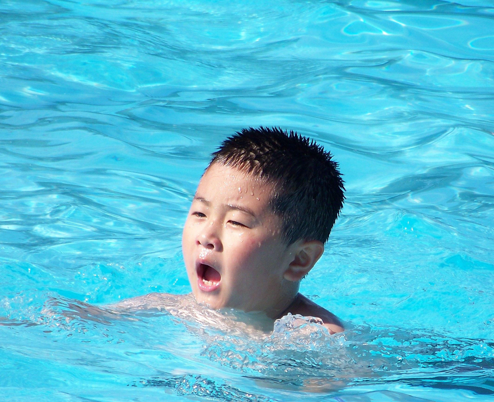

I'm Gavin Sun,
and welcome to my website! I'm from Markham, Ontario, and I'm a first year student at the University of Waterloo in the Computing and Financial Management program. I'm an aspiring quant hoping to explore the world of both programming and finance in the coming years and I always strive to learn new things and improve my abilities.
I started programming in grade 11, where I took an introductory high school computer science course. Since then, I have:
- Created a Bomberman game using Greenfoot and Java.
- Made an image editor using Greenfoot and Java
- Put together a factory simulation using Greenfoot and Java
- Developed a personal website (The one you're looking at now!) using HTML and CSS
- Learned the functional programming language Dr.Racket and completed various assignments and projects using it
As you browse this website, I hope you learn lots about me and my plans for the near future. If you have any questions, feel free to contact me!>
Why I chose to pursue programming and finance...
Starting from a young age, I was always fascinated by the technology surrounding me. The computer, TV, and game consoles all peaked my interest and were the things I spent the most time using. Initially, I wanted to go into game development as I was very passionate about playing games and wanted to create games for others to enjoy and experience. After programming a couple games in high school, I realized this was not the path for me. However, through wanting to go into game development, I learned that I did in fact have a passion for programming and wanted to continue learning it.
When it comes to finance, I was exposed to the subject at a very young age since both my parents worked in fields that were closely associated with the subject. Naturally, I was influenced to take a path similar to theirs and took math lessons outside of school to hone my mathematical skills. Through taking math classes, I realized my love for dealing with numbers and learning new concepts. In high school, I took multiple business courses in order to obtain a basic understanding of each field. Out of all the courses I took, capital markets was by far my most interesting course that I wanted a deeper understanding in. Finance fit perfectly with my love for both mathemathics and capital markets, hence why I chose to pursue it.
More about me...
Besides programming and finance, here are some other things I enjoy doing:
Swimming - Coming from a line of not so tall genetics, my parents wished for me to be tall. In order for this small dream to be realized, they exposed me to both basketball and swimmming, which are known for making you grow taller. After playing a while it was evident I liked swimming much more than basketball, so I mainly focused on the aquatic sport and dropped the contact heavy sport. Much later down the line, my efforts in swimming paid off and I became an instructor teaching my students the sport that I am passionate about. My overall experience with swimming has taught me about leadership, confidence, perseverance, and teamwork. Although its been a minute since I last swam, I cherish the experiences the sport provided me.
Collecting Cards - Starting from a young age, I loved collecting toys and Pokémon cards. As I got older, I outgrew buying toys but continued collecting cards. I became a serious collector and started taking much better care of my cards and organizing them in a much neater fashion. To this day, I still collect cards and mainly focus on Pokémon cards. Some other card games I collected were Hockey, Yugioh, Vanguard, and Buddyfight. The main thing collecting cards has taught me is to organize things in a manner that is common amongst everyone in order to make the overall process much easier and enjoyable. This same concept can be applied to coding, where I format code in a manner that makes it easy for other programmers to read.

Stock Investing - Growing up, I really wanted to be just like my dad, who would research stocks at home. I would watch him invest and get headaches looking at the charts and annual reports he'd read. Fast forward to grade 11, my interest in stocks reimerged, this time not because of my dad but my own financial goals in life. Although I will say having a dad who is good at stock investing has made the learning process much smoother and less painful. My dad has recommended me lots of books to read and has taught me the fundamental basics of stock investing. I might currently be a beginner at stock investing, I plan on absorbing lots of knowledge on the ever so complicated form of generating income.